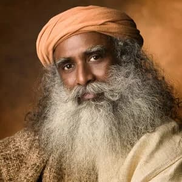

Classical Hatha Yoga designed by Sadhguru. We are based in United States and Ukraine.
Certified Hatha Yoga Teacher by Isha Foundation.
Teacher
Angela shares: "In 2016 I completed an intensive Hatha Yoga Teacher Training at the Isha
Yoga Center (India), which includes 1,750 hours (half a year) of classical hatha yoga
training in its original form.
Training continues even now – the Isha Hatha Yoga School regularly conducts advanced
training programs for its teachers in India, Europe, and the United States, supporting them
and teaching them new practices."
Angela Pelekh
Founder of the Classical Hatha Yoga school "Bhavya Yoga".
I'm from Lviv. But in 2003, my family went to America, and in 2012, Sadhguru came to Detroit
and I came to his program... Well, that's where it all started... Now I come to Ukraine
twice in March and in the summer to be able to transfer these yogic practices.
In 2018 I built a small studio in the Carpathians, where retreats and most Ukranian programs
are held. This place is quite high in the mountains, and the programs there are great (it
feels like a small ashram in Ukraine). We have Sannidhi there, and a process is held on
Mondays by one meditator who lives there.
Upa Yoga
— is a system of yoga which is not strongly oriented towards the spiritual, and more
towards the physical, emotional, psychological and energy dimensions of a human being.
You learn to activate lubrication of joint and energy nodes, activate spine and balances
energy system.
Upa Yoga has numerous benefits:
Relieves physical stress and tiredness
Strengthens the joints and muscles
Rejuvenates the body after periods of inactivity
Negates the effects of jetlag and long travel
Surya Kriya
2 sessions x 3.5 h
Surya Kriya
— solar energy is the fundamental energy and that is so even within human body. Surya
Kriya is a powerful process of activating the sun within you. It generates sun energy
within the system and body begins to glow and shine. On a psychical level this process
balances glandular secretion, mucus level and cures backache. There is also profound
dimension to it. It is a way of adjusting human energy system to the celestial geometry,
so that you are in sync with the existence. It is being in sync with a nature on many
different levels.
Surya Kriya includes several aspects that enrich one's life:
Develops mental clarity and focus
Remedies weak constitutions
Boosts vigor and vitality
Balances hormonal levels in the body
Prepares one for deeper states of meditation
Angamardana
3 sessions x 3,5 h
Angamardana
— is an ancient fitness system rooted in Yoga which offers everyone the opportunity to
reach peak physical and mental health and revitalize the body. Angamardana means,
'Gaining Complete Mastery over the limbs, organs or other body parts. No equipment or
weights needed only own physical body and floor.' True to its name, this yoga practice
will take years (and kilo's) off your body enabling you to live a vibrant and active
life. Regular practice of Angamardana controls blood sugar levels, rejuvenates the body
and heightens and maintains energy levels throughout the day.
Regular practice of Angamardana revitalizes the body in many ways:
Strengthens the spine, skeletal system, and muscular system
Builds physical strength, fitness, and tenacity
Takes years off the body, bringing a sense of lightness and freedom
Prepares the body for Hatha Yoga
Bhuta Shuddhi
1 session x 1,5 h
Bhuta Shuddhi
— this is the most fundamental practice in yogic system. Our body is just a
manifestation of five elements: earth, water, fire, air and space. "Bhuta" means
"elements" and "Shuddhi" means "to cleanse". In terms of health, wellbeing, perception,
knowing everything is handled if you know how to keep these five elements properly.
Benefits:
Keeps the system in harmony and balance
Prepares the system to handle powerful states of energy
Enhances the capabilities of the physical body, mind, and energy system
Creates the basis to gain complete mastery over the human system
Yogasanas
4 sessions x 3 h
Asanas
— the word asana literately means "a posture". Every posture the body can take is an
asana. Certain postures are possibilities for elevating human consciousness.
Yogasanas are not exercises, this must be clearly understood. They are subtle processes
to direct and activate our energy in the particular direction, to bring us to a state
where we are a cosmos by our self. Practicing Yogasanas brings awareness, brings sense
of freedom and prepares a person to the higher level of consciousness.
The practice of Yogasanas provides countless benefits including:
Relief of chronic health conditions
Evolution of body and mind towards a higher possibility
Stabilization of the body, mind, and energy system
Deceleration of the aging process
About Isha
The Isha Hatha yoga school, founded by Sadhguru, is designed to revive the ancient but still
relevant science of hatha yoga. The Isha Hatha yoga programs have been passed by millions of
people around the world, including India, Great Britain, Singapore, Australia, China,
Canada, United States and Ukraine.

The word "Yoga" means union. When you are in yoga, you experience everything as a part
of yourself and that is ultimate freedom.
Sadhguru is a Yogi, Mistic, and Visionary who dedicated himself to the well-being of all. He
presents the Science of Yoga in a way that is relevant for modern times.
Three decades ago, Sadhguru founded the Isha Foundation. It is a volunteer-run non-profit
organization, which works towards fostering world harmony through individual transformation.
Today Isha operates over 300 centers worldwide with the help of over 11 million volunteers.
The school's name, "Bhayva Yoga" was given by Sadhguru, which means: the best yoga! 😇
Sharings
"Sadhguru said that little compares to Surya Kriya in the way it develops your mind.
After 2-3 months of regular practice, I began to notice the change in my perception and
thought process during and immediately after doing Surya Kriya. My mind becomes clear.
What may appear as a simple gymnastics is not."
– Konstantin, Ukraine
"I started doing Hatha Yoga at the age of 43 years. My body was rigid. A few years after
doing Isha Hatha Yoga, I became flexible enough to run marathons with just a few days of
practice. Body aches and tiredness are things of the past. Energy levels are at a high
level throughout the day. The need for sleep has reduced from 8 to 9 hours a day to less
than 7 hours. The body has not been a stumbling block for any activity, however
strenuous. Body, mind, emotion and energy are in sync and there is complete balance and
mental clarity with no stress!"
– Sadashiv, India
"Surya Kriya works miracles! Suddenly, many asanas became profounder and today I
accidentally discovered that I could fall into the twine (just recently coundn't reach
20-30 cm). Finally, i got a burst of strength and energy. I'm so glad I bumped into this
practice. Thank you once again!"
– Anastasia
"I noticed a difference in terms of my productivity at work. After practicing Surya
Kriya, I am able to just pay attention to what I need to do at that time. I am able to
focus for a longer period of time as well..."
– Simone, United States
"The kind of flexibility and strength Angamardhana can give you, nothing else can do
that. You can see amazing results in such a short period of time."
– Vasundhara, India
We transmit the Classical Hatha Yoga in its full depth and dimension. It was designed by
Sadhguru and rooted in ancient Yogic science.
If you don't see programs scheduled in "Upcoming programs" or if you want to develop certain
aspects of your life pls drop us a message. We will find optimal program and make it happen
for you.